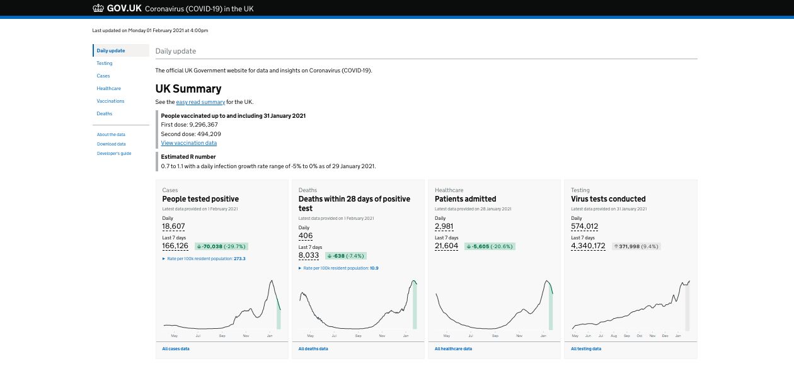
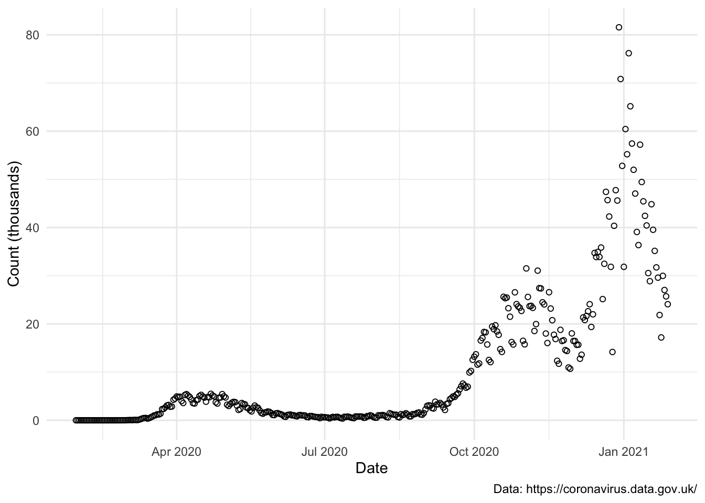
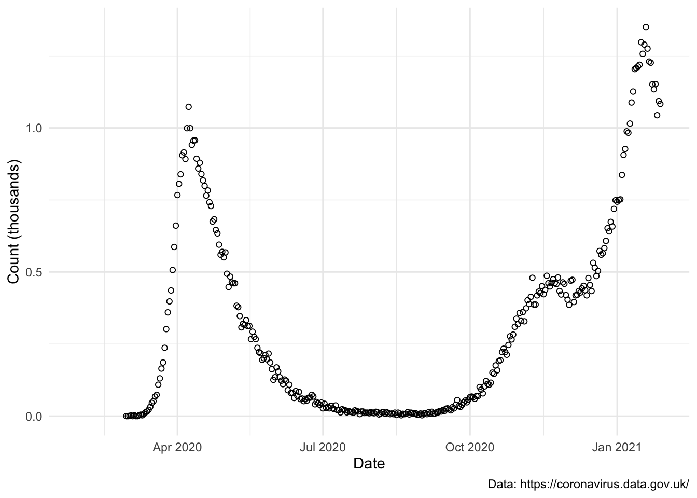
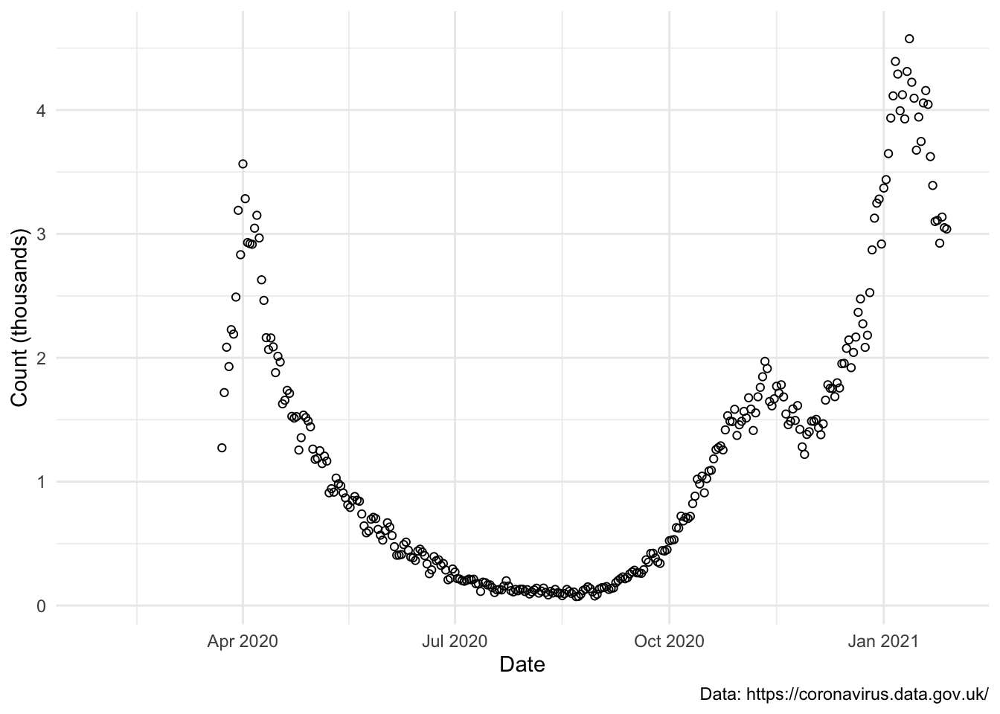
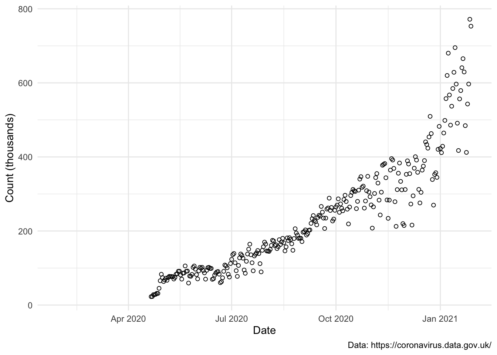

data <- read.csv(
paste0(
"https://api.coronavirus.data.gov.uk/v2/data",
"?areaType=overview", # UK wide
"&metric=newCasesBySpecimenDate", # cases
"&metric=newDeaths28DaysByDeathDate", # deaths
"&metric=newAdmissions", # healthcare
"&metric=newVirusTests", # testing
"&format=csv" # CSV output
),
stringsAsFactors = FALSE
)
tl;dr
I used the {sonify} package in R to represent a year of the UK’s COVID-19 data in audio format. You can jump straight to the audio.
Listen to your data
I watched an excellent talk at the rstudio::global(2021) conference by JooYoung Seo titled ‘Accessible Data Science Beyond Visual Models: Non-Visual Interactions with R and RStudio Packages’. You can access the video or his blog on the subject.
In the talk he mentioned the {sonify} package for R, which lets you represent data with sound rather than with visuals. For example, values of x and y that increase linearly can be represented by a sound that rises in pitch.
I wondered: what would COVID-19 data sound like, given it’s been a year since the UK’s first cases?
COVID-19 data
GOV.UK, the UK government’s website, has a ‘daily dashboard’ of COVID-19 statistics. There are four prominent statistics:
- Cases (people tested positive)
- Deaths (deaths within 28 days of a positive test)
- Healthcare (patients admitted to hospital)
- Testing (virus tests conducted)
The downloads page contains these data and more, both UK-wide and at local levels. This post isn’t an analysis, but I implore you to take a look a the data yourself and read the details about how the data were collected.
Helpfully, you can generate a permanent API link from which to fetch data1. Here I’m grabbing the UK-wide stats mentioned above:
I’ll apply some minor cleaning to order by date and isolate the first 365 days, which takes us to 28 January 2021.
data <- data[order(data$date), ] # order by date
data <- data[1:365, ] # first year
range(data$date)[1] "2020-01-30" "2021-01-28"I read this into R as a data.frame object with one row per day.
tail(data[, c(1, 5:8)]) date newCasesBySpecimenDate newDeaths28DaysByDeathDate
18 2021-01-23 21851 1151
17 2021-01-24 17191 1134
16 2021-01-25 29976 1152
15 2021-01-26 27036 1044
14 2021-01-27 25720 1093
13 2021-01-28 24092 1083
newAdmissions newVirusTests
18 3100 484485
17 3109 412204
16 2925 542893
15 3136 596845
14 3050 771710
13 3039 753031How quickly a year goes.
AV functions
You can skip to the next section if you aren’t interested in the code that will be producing the audio and plots.
Audio
I’ve written a small function using sonify::sonify() to generate audio clips that represent each COVID-19 variable over time.
You pass sonify() your x and y points as you would the plot() function. It has a number of audio-related arguments that let you modify things like the waveform and interpolation, but I’m sticking to the defaults here. This produces a five-second clip in stereo, so you’ll hear the sound move from left to right as you listen.
The {tuneR} package has the function tuneR::writeWav() to write out the audio to a local .wav file (my desktop in this case).
sonify_covid <- function(y, out_dir = "~/Desktop") {
tuneR::writeWave(
sonify::sonify(
x = as.Date(data$date), y = data[[y]],
play = FALSE # suppress audio from playing
),
file.path(out_dir, paste0(y, ".wav"))
)
}
# Apply the function each variable
purrr::walk(names(data[5:8]), sonify_covid)These clips are embedded above the plots in the section below. A download link is included on the player. If you have trouble playing or downloading any of the clips, you can also access them in a playlist on SoundCloud.
Visual
I’m including plots so you can follow how the visuals map to the sound. The plots are going to be intentionally sparse because the focus of the post is the sound the data make. The function takes a COVID-19 variable from our dataset and plots it over time with {ggplot2}.
library(ggplot2) # attach plotting package
plot_covid <- function(y) {
ggplot() +
geom_point(
aes(as.Date(data$date), data[[y]] / 1000),
shape = 21 # empty-circle character
) +
labs(
caption = "Data: https://coronavirus.data.gov.uk/",
x = "Date", y = "Count (thousands)"
) +
theme_minimal()
}You can then pass in the variable like plot_covid(newAdmissions), although I’ve hidden this code in the next section.
COVID-19 sonified
In each clip, a higher pitch indicates a higher value; a more continuous tone indicates that the points are tightly distributed; and the sound moving from the left to right audio channel indicates change over time.
All of these datasets start on the same date, 30 January 2020, which is when the first cases were recorded according to the newCasesBySpecimenDate variable. They all end 365 days later on 28 January 2021.
These data are quite well suited to sonification, given the peaks and troughs. In particular, the death and healthcare variables spike quickly, fall back down, rise again, drop slightly and then peak once more. You won’t notice that initial spike for the cases variable, given the relatively lower testing rate at the time.
Cases
This audio and plot show the number of people who have tested positive over time.

Death
This audio and plot show the number of recorded deaths within 28 days of a positive test over time.

Healthcare
This audio and plot show the number of patients admitted to hospital over time.

Testing
This audio and plot show the number of virus tests conducted over time.

Coda
Sonification has been used for a variety of applications during the pandemic as an alternate means of conveying the data.
For example, Jan Willem Tulp has created a page that ‘dings’ each time there’s a new case around the world. For something more complex, Mark D. Temple has published in the BMC Bioinformatics journal a paper about sonifying the COVID-19 genome (!). Meanwhile, Pedro Pereira Sarmento has sonified data to investigate the impacts of COVID-19 on air pollution.
I’m probably not the first to sonify coronavirus data in this way, and probably not even the first to do it with R, but it seemed a good time to take a look (listen?) back on things. I’m interested to hear more about what approaches others have taken.
Environment
Session info
Last rendered: 2023-07-17 21:41:22 BSTR version 4.3.1 (2023-06-16)
Platform: aarch64-apple-darwin20 (64-bit)
Running under: macOS Ventura 13.2.1
Matrix products: default
BLAS: /Library/Frameworks/R.framework/Versions/4.3-arm64/Resources/lib/libRblas.0.dylib
LAPACK: /Library/Frameworks/R.framework/Versions/4.3-arm64/Resources/lib/libRlapack.dylib; LAPACK version 3.11.0
locale:
[1] en_US.UTF-8/en_US.UTF-8/en_US.UTF-8/C/en_US.UTF-8/en_US.UTF-8
time zone: Europe/London
tzcode source: internal
attached base packages:
[1] stats graphics grDevices utils datasets methods base
loaded via a namespace (and not attached):
[1] htmlwidgets_1.6.2 compiler_4.3.1 fastmap_1.1.1 cli_3.6.1
[5] tools_4.3.1 htmltools_0.5.5 rstudioapi_0.15.0 yaml_2.3.7
[9] rmarkdown_2.23 knitr_1.43.1 jsonlite_1.8.7 xfun_0.39
[13] digest_0.6.31 rlang_1.1.1 evaluate_0.21 Reuse
CC BY-NC-SA 4.0